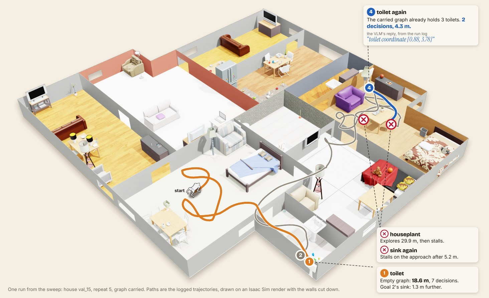
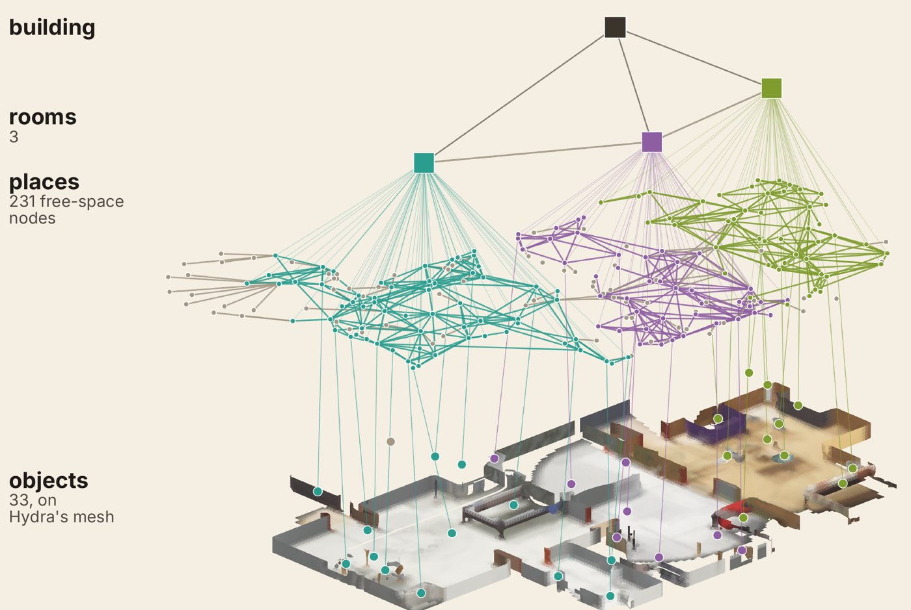
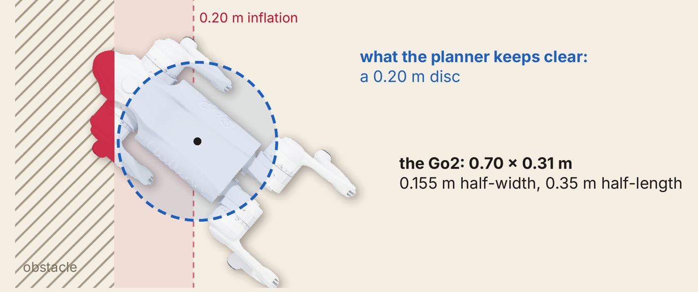

Persistent Scene-Graph Memory on a Legged Robot: Separating Memory Gains from Execution Failure
CoRL 2026 Workshop on Memory for Robot Foundation Models (RoboMem)
1Khoury College of Computer Sciences · 2Dept. of Mechanical and Industrial Engineering
Northeastern University, Seattle
Abstract
A robot that returns to the same building can reuse its map instead of searching from scratch. The lifelong object-navigation benchmarks that persistent-memory navigators report on model the agent as a rigid cylinder, so it is not known how much of the memory benefit survives a body that can catch on furniture and fall. We evaluate persistent scene-graph memory for chained object-goal navigation on a simulated Unitree Go2 quadruped in Isaac Sim, over 2,500 paired episodes in 25 houses, five chained subtasks per house. Carrying the scene graph across subtasks raises success rate from 0.38 to 0.51, and the gain grows as the graph accumulates, from none on the first subtask to 0.21 on the fourth. Of 1,357 failures, 64% are stalls or falls, and 95% of the stalls end within half a body length of an obstacle. Without the carried scene graph, an object record store raises success at p = 0.023; restricted to pairs in which both robots made at least one decision, the same comparison gives p = 0.47.

Problem
If a robot works in the same building every day, it shouldn't have to re-explore the place every time you ask it for something. Zero-shot object navigators like VLFM and SG-Nav throw their map away after each goal. Persistent-memory navigators like SSMG-Nav keep it across a chain of goals, usually as a 3D scene graph built online from RGB-D (Hydra, ConceptGraphs). The lifelong benchmarks they report on, like GOAT-Bench, run in Habitat, where the agent is a rigid cylinder that slides along walls and furniture instead of getting caught on them.
A dog doesn't slide. It catches on doorframes, gets wedged between furniture, and falls over. Nobody picks it back up in our setup, so a fall loses every goal left in that house. That caps how much any memory can help. It also skews the comparison itself, because if one robot stops moving more often than the other, part of the success gap is about walking and not memory. So we tag every failure with the stage it broke in and check how much of the memory gain is still there once execution is accounted for.
Method
Each house gets five object categories in the order A, B, C, A, B, so goals 4 and 5 ask for the same things as goals 1 and 2 with two other goals in between. Like in GOAT-Bench, a goal counts if the robot says it has arrived within 1.0 m of any instance of the category. A goal also ends if it burns through its 30,000 sim steps or if the robot falls. We don't right a fallen robot, so a fall fails the rest of the house too.
The robot is a Unitree Go2 in Isaac Sim with a front RGB-D camera, walking on a velocity-tracking policy trained
with unitree_rl_lab. Hydra builds the scene graph from the RGB-D stream, and we ray-cast a 2D occupancy grid
from depth. The SSMG-Nav planner hangs objects onto a skeleton graph of the free space. Qwen3.5-9B scores candidate places
from their objects and a bird's-eye crop of the map, and VLFM's value map scores frontiers. A* plans on the occupancy grid
with obstacles inflated by 0.20 m, and pure pursuit turns the path into velocity commands for the gait policy. Object
labels come straight from the simulator in every configuration, so detection errors stay out of the comparison.

What we vary is what happens to the graph between goals. With the graph carried, one Hydra instance runs through all five goals in a house. With the graph rebuilt, every goal starts a fresh Hydra, and anything seen on earlier goals is hidden from target selection. Both keep the robot's pose and the occupancy grid, so they plan on the same free space either way. On top of that there's an object record store, a per-object database that survives Hydra's node merges. It gives the planner each candidate's observation history and a log of where earlier goals already searched. Two factors with two levels each make four configurations.
The houses are 25 single-floor ProcTHOR houses, 155 to 399 m², each with all five goal categories (sofa, bed, toilet, sink, houseplant). Every configuration runs all 125 goals five times, so 625 goals per configuration and 2,500 total. We compare two configurations on pairs of episodes with the same repeat, house and goal. Significance is an exact sign test on the pairs whose outcomes differ, and the 95% intervals come from a bootstrap that resamples whole houses.
Results
Carrying the scene graph
Both configurations start goal 1 with an empty graph, so memory can't show up until goal 2. Over 625 pairs, carrying the graph takes success rate from 0.381 to 0.506 (+0.125, interval [+0.059, +0.189], p < 0.001) and SPL from 0.194 to 0.303. The gap grows with the graph, from +0.01 on goal 1 to +0.21 on goal 4. Tap a goal in the chart for its numbers, and toggle the record-store configurations on and off.
On a repeated category, the carried graph mostly helps when the robot actually found the object the first time. After a success on goal 1, goal 4 succeeds in 53 of 86 runs (0.62) with the graph carried and 28 of 85 (0.33) with it rebuilt. After a failure on goal 1 it's 6 of 39 (0.15) against 5 of 40 (0.12).
| configuration | SR | SR@0.5 | oracle SR | SPL | falls | lost before 1st decision |
|---|---|---|---|---|---|---|
| graph carried | 0.506 | 0.483 | 0.594 | 0.303 | 20 | 52 |
| carried + record store | 0.510 | 0.490 | 0.587 | 0.295 | 18 | 41 |
| graph rebuilt | 0.381 | 0.373 | 0.448 | 0.194 | 26 | 133 |
| rebuilt + record store | 0.432 | 0.414 | 0.494 | 0.219 | 25 | 100 |
625 goals per configuration. Falls count house runs that ended in a fall.
Where it fails
Every failed goal gets one stage, checked in order. GROUND means the agent said the object isn't there, which is always wrong since every category exists in every house. SELECT means it never picked the right target within the budget. MOVE means the robot stopped making progress or fell before the agent was done. Goals where Hydra never produced a graph get their own bucket instead of going into SELECT. Of 1,357 failures, 866 (63.8%) are MOVE.
We checked every stall site against the simulator's colliders and against the robot's own live map. Of 575 stalls, 545 (95%) end within 0.35 m of an obstacle, half the Go2's length, while only 10.4% of path points are that close. The median clearance is 0.21 m, right at the planner's 0.20 m inflation, and in 86% of stalls the live map already had that obstacle. Of the 89 falls, 53 happen more than 0.35 m from any obstacle, which points at the gait. We didn't log contacts, so we can't confirm it.

Memory moves stalls around more than it gets rid of them. On the repeated goals, carrying the graph halves exploration stalls (50 to 25), and approach stalls go from 8 to 39.
Execution failure in memory comparisons
The rebuilt configurations lose a lot more goals before making a single decision (133 against 52), and those losses get counted as part of the scene-graph gain. Keeping only the pairs where both robots made at least one decision removes that gap. That filter conditions on something that happens after the treatment, so we use it as a sensitivity check and keep the full set as the main estimate.
The record store is where this bites. With the graph rebuilt it looks like it helps (+0.051, p = 0.023), but its 32 extra successes come with 33 fewer goals lost before the first decision. Keep only the pairs where both robots decided and its gain drops to +0.021 (p = 0.47). The scene-graph gain holds at +0.090 (p < 0.001). Switch between the two sets of pairs below. Filled dots are p < 0.05 by the sign test.
If you're evaluating memory on a legged robot, report execution-failure rates for every configuration, along with the effect on pairs where both robots actually made a decision.
Limitations
- Everything here is one simulator, one locomotion policy and one house generator. The execution share could look different on the real dog.
- Object labels and poses come from the simulator. That keeps perception error out of the memory comparison, and it also makes absolute success an upper bound.
- Restarting Hydra for the rebuilt configurations left 46 goals with no graph. We haven't run a matched control that re-detects objects at every goal.
- Recovery is open-loop and we didn't log contact forces, so being near an obstacle is evidence of a clearance failure, not proof.
- We didn't run an ideal-body baseline, so we can't say how much success the legged body itself costs.
BibTeX
@inproceedings{aliyev2026persistent,
title = {Persistent Scene-Graph Memory on a Legged Robot:
Separating Memory Gains from Execution Failure},
author = {Aliyev, Kanan and Kalavakonda, Niveditha},
booktitle = {CoRL 2026 Workshop on Memory for Robot
Foundation Models (RoboMem)},
year = {2026}
}